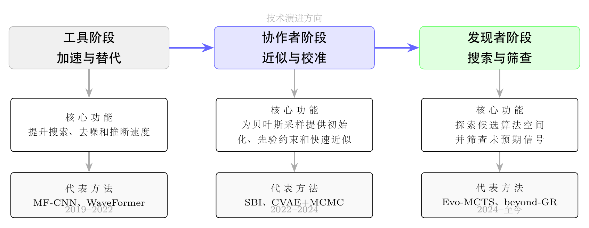
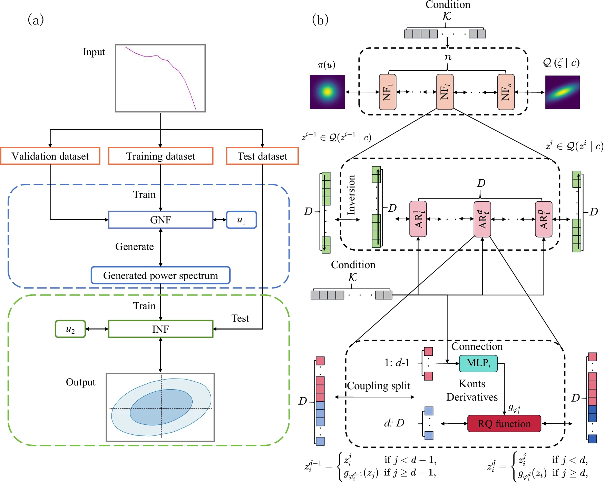
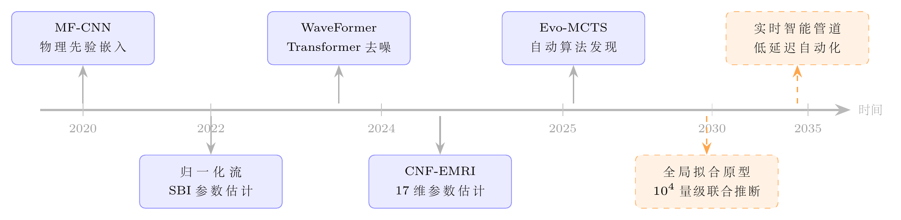

Chapter 11
智能引力波天文学的发展趋势
回顾本书前十章的内容，可以看到一条清晰的演进轨迹：从匹配滤波和贝叶斯推断的经典框架（第3、4章），到深度学习在信号识别和参数估计中的系统应用（第5、6、7章），再到 LLM 驱动的自动算法发现和物理-数据融合（第8、9章），最终面向空间引力波探测器的全局挑战（第10章）。这一轨迹不仅是方法论的演进，也反映了人工智能在科学研究中从计算辅助向方法协同方向的角色扩展。
本章从四个维度展望这一转变的深远影响：自动算法发现、跨领域方法迁移、理论无关信号探测，以及智能化天文学的未来形态。
11.1 从工具到协作者：人工智能在科学中的角色转变
在引力波天文学的早期 AI 应用中，神经网络扮演的是“加速器”的角色：用更快的推断替代更慢的传统方法，但推断的目标（检测哪类信号、估计哪些参数）仍由人类专家预先定义。这一范式的局限在于：它只能在已知的算法设计空间内优化，无法探索人类认知边界之外的可能性。
近年来出现的一批工作开始突破这一局限，标志着 AI 从“工具”向“协作者”乃至“候选方法发现者”的角色扩展。这一转变体现在三个层面：
算法发现：AI 不再只是执行人类设计的算法，而是可以辅助搜索人类尚未系统尝试的候选算法。Evo-MCTS [30] 在引力波检测任务上发现的 PT-4 算法，整合了自适应白化、跨探测器相干、连续小波变换等模块的特定组合，并在标准基准中取得了有竞争力的结果；其发现过程由 LLM 引导的进化搜索完成，最终仍需由物理专家审查和解释。
信号发现：AI 不再只检测已知形态的信号，而是探测人类未曾预期的信号。Wang 等人 [32] 展示的 beyond-GR 信号探测，利用在广义相对论波形上训练的神经网络的泛化能力，探测偏离 GR 的奇异信号——这类信号在传统模板搜索中会被系统性遗漏。
方法迁移：AI 方法不再局限于引力波领域，而是可作为通用推断框架迁移到其他天文观测场景。Sun 等人 [33] 将 SBI 方法迁移到 21cm 森林观测，在物理背景差异显著但统计结构相近的问题中展示了方法迁移潜力。
11.1.1 “工具”阶段的典型特征与局限
以MF-CNN [20]（2020年）和WaveFormer [27]（2024年）为代表，“工具”阶段的AI方法主要解决特定的计算瓶颈——检测速度、去噪质量——而不改变分析的整体框架。评判标准是“比传统方法快多少”或“在同等准确率下快多少”，方法的设计思路是“将已知算法神经网络化”，网络架构反映了专家对问题的先验理解（如感知层的设计）。这一阶段的代表性指标：MF-CNN比匹配滤波快数个量级，SBI [26]比MCMC快 \(10^3\)–\(10^6\) 倍。
“工具”阶段的局限在于：AI方法的能力上限很大程度上由人类专家预先设定的算法设计空间决定。无论神经网络多么高效，它执行的仍然是人类设计或限定的算法逻辑——匹配滤波的三步操作、贝叶斯推断的后验估计。这意味着AI方法难以主动探索人类专家尚未形式化的信号处理策略。
11.1.2 “协作者”阶段的典型特征
以CVAE+贝叶斯混合推断（2025年）为代表，“协作者”阶段的AI不再是传统方法的替代品，而是作为“智能预处理器”为传统方法提供初始化和约束。核心洞察是：AI的近似性和传统方法的精确性各有优势，组合使用比任何单一方法都好。这一阶段的代表性指标：混合推断将贝叶斯参数估计时间压缩至14%，同时保持与完整贝叶斯方法相当的精度。
“协作者”阶段的方法论意义在于：它打破了“AI方法”与“传统方法”的对立关系，建立了一种互补协同的新范式。AI方法的快速近似能力与传统方法的精确保证能力相结合，可以在效率与精度之间获得单一方法难以同时达到的平衡。这一范式的成功，为后续更深层次的人机协作奠定了方法论基础。
11.1.3 “发现者”阶段的典型特征与方法论意义
以Evo-MCTS（2025年）为代表，“发现者”阶段的AI不再仅执行或辅助人类设计的算法，而是参与候选算法的系统搜索。这一阶段的核心转变是：评判标准从“执行效率”扩展为“发现能力”——能否在明确约束和标准基准下找到优于既有候选方案的新算法。
Evo-MCTS发现的PT-4算法整合了多种不同的信号处理技术，这种组合方式未必是传统流水线设计中的常规选择，但在自动搜索过程中表现出较高性能。更重要的是，PT-4算法的每个组成模块都有清晰的物理意义，物理学家可以事后理解和解释其有效性——这种“搜索提出候选，专家验证解释”的模式，是“发现者”阶段区别于“工具”阶段的重要特征。
从科学哲学角度，这一演进反映了AI技术能力的系统性提升：从“执行规则”（专家系统），到“学习规则”（机器学习），再到“搜索规则”（AI驱动算法发现）。对引力波天文学研究范式的影响在于：传统的“物理学家提出方法，工程师实现方法”范式正在扩展为“AI提出候选方法，物理学家验证和解释方法”。这一转变并不意味着物理学家的作用被削弱，而是被重新聚焦到更高层次的问题上：科学问题的提出、结果的物理解释、以及新发现的跟进研究。
AI角色转变的深层动因不仅来自技术能力的提升，也来自引力波天文学自身发展阶段的要求。在“稀少事件精密分析”阶段（O1-O3，每年约10–20个事件），人工专家参与每个事件的完整分析流程是可行且必要的；在“中等规模统计样本”阶段（O4及以后，每年约100–1000个事件），人工专家需要把更多精力集中在高价值事件和方法验证上，大量常规事件需要自动化处理；在空间引力波时代的“海量信号同时存在”场景中，人工专家难以直接参与每个子任务，自动化智能系统将成为必要组成部分。这一历史进程使得AI从“工具”向“协作者”的角色扩展不仅是技术可能，也是科学需求。理解这一历史背景，有助于正确评估当前AI方法的价值——它们不是对传统方法的颠覆，而是引力波天文学进入新阶段的必要准备。

11.2 LLM 驱动的自动算法发现：Evo-MCTS 与 G-LNS 的启示
Evo-MCTS [30] 和 G-LNS [31] 代表了 LLM 驱动的自动算法发现在两个不同领域的实践：前者针对科学计算中的信号处理管道设计，后者针对组合优化中的大邻域搜索算子设计。两者的共同点说明，这一范式在若干具有清晰评估函数和可形式化领域知识的问题上具有可迁移潜力。
可迁移的搜索基础设施。Evo-MCTS 的核心——蒙特卡洛树搜索、进化操作、LLM 代码生成——是与具体问题无关的搜索机制。正如 Evo-MCTS 论文所指出的，“可迁移的是搜索机制，而非固定的管道”。这意味着同一框架可以应用于引力波检测算法设计、噪声特征化方法设计、参数估计工作流设计等多个目标，只需替换问题特定的评估函数和领域知识提示词。
领域知识的关键作用。两项工作都强调了领域知识集成的重要性：Evo-MCTS 中领域知识集成将性能提升 115%，G-LNS 中问题特定的约束引导使搜索收敛到物理上有意义的解。这一发现对未来的应用具有重要指导意义：在科学计算领域，通用 LLM 的代码生成能力可以提供候选解生成能力，但领域专家的知识注入、约束定义和结果审查仍是方法可靠性的关键条件。
可解释性作为科学可信度的基础。Evo-MCTS 发现的算法由可检视的代码模块组成，其决策逻辑对物理学家透明可验证。这一特性在科学应用中至关重要：一个物理学家无法理解的“黑箱”算法，即便性能再高，也难以获得科学界的信任和采纳。可解释性不是性能的对立面，而是科学可信度的基础。
11.2.1 G-LNS的完整介绍与方法论分析
大邻域搜索（Large Neighborhood Search，LNS）是组合优化的经典元启发式方法，其核心是交替执行“破坏”（destroy）和“修复”（repair）操作，逐步改善当前解。在每次迭代中，破坏算子从当前解中移除一部分变量（“破坏”当前解的局部结构），修复算子则对移除的变量重新赋值（“修复”被破坏的部分），如果新解优于当前解则接受，否则以一定概率接受（模拟退火策略）。LNS的关键在于破坏和修复算子的设计：好的算子能够识别当前解中的“弱点”并针对性地改善，而随机算子则效率低下。
G-LNS（LLM-Guided Large Neighborhood Search，Zhao等2025年）用LLM代替传统的随机破坏-修复算子，根据当前解的特征生成问题特定的算子。具体地，G-LNS将当前解的结构信息（如TSP中的长边、局部次优子路径）编码为自然语言描述，输入给LLM，要求LLM生成针对性的破坏算子（移除这些问题结构）和修复算子（重新插入移除节点的最优位置）。LLM生成的算子以Python代码形式输出，直接在优化循环中执行。
在旅行商问题（TSP）上，G-LNS比纯LLM方法（直接用LLM生成完整解）和传统LNS（随机破坏-修复）分别快约5倍和2倍，在作者所设基准中解质量也有所提升。核心创新在于：LLM利用当前解的结构信息（如TSP中的长边、局部次优子路径），生成针对性的破坏算子（移除这些问题结构）和修复算子（重新插入移除节点的候选位置）。这种“理解-生成”的循环使搜索过程具有一定的问题感知能力，而非完全依赖随机探索。
11.2.2 两项工作的深层共性与方法论启示
Evo-MCTS（科学计算）和G-LNS（组合优化）针对的问题差异很大，但在方法论层面具有若干共性，提示了LLM驱动算法发现的一组可迁移设计原则。
两者都遵循“LLM作为知识蒸馏器”的范式——LLM将训练数据中的大量算法设计模式凝练成可执行代码。LLM在预训练阶段接触了大量的算法设计文献、代码库和技术报告，积累了丰富的算法设计知识。在具体任务中，LLM通过上下文学习（in-context learning）将这些通用知识与特定问题的约束相结合，生成针对性的算法代码。这一过程本质上是将人类积累的算法设计智慧“蒸馏”为可执行的代码，并通过迭代改进不断提炼。
两者都依赖领域特定的上下文来引导LLM生成有意义的候选：Evo-MCTS的物理约束（引力波信号的时频特征、探测器噪声模型）和G-LNS的图结构信息（TSP当前解的边权分布、局部结构特征）都是引导LLM生成有效算子的关键。没有这些领域特定的上下文，LLM只能生成通用的算法代码，无法针对具体问题的特殊结构进行优化。
两者都使用迭代改进策略：Evo-MCTS的进化树（通过MCTS逐步探索算法空间，保留高性能算法并在其基础上进化）和G-LNS的解的演化历史（将历史上成功的破坏-修复操作作为示例，引导LLM生成更好的算子）。这种迭代改进策略使得搜索过程能够从初始的随机探索逐步收敛到高性能区域，避免了纯随机搜索的低效性。
Evo-MCTS的核心组件（MCTS树结构、进化操作、LLM调用接口、评估器接口）具有较强的问题无关性。将Evo-MCTS迁移到新问题，通常需要重新定义评估函数（如引力波参数估计的精度、去噪的重叠度）、提供领域知识提示词（描述问题的物理/数学约束），并设计初始候选算法（可以是现有基线方法）。这种模块化设计使Evo-MCTS框架具有可迁移性，但迁移效果仍取决于评估函数的可靠性、搜索预算和领域知识表达质量。
Evo-MCTS和G-LNS的成功还揭示了一个更广泛的科学问题：在多大程度上，科学领域的高效算法已经被人类专家充分探索？对于引力波检测，Evo-MCTS在约500次评估后发现的PT-4算法在MLGWSC-1基准上优于多个人工设计基线，这表明即便对于已经被研究多年的信号处理问题，仍可能存在尚未被系统探索的高效算法空间。这一发现的哲学意涵在于：人类专家的直觉和经验是宝贵的，但也可能存在认知盲区（cognitive blind spots）——某些有效的算法组合方式不容易由直觉直接给出，却可以通过系统性的计算搜索被发现。LLM引导的进化搜索通过吸收大量科学文献和代码库中的算法设计模式，在一定程度上扩展了可探索的候选空间。随着LLM能力的提升和领域知识注入方法的成熟，这类工具有望成为未来科学计算中的重要辅助机制。认知盲区的存在并不意味着人类专家的价值降低；恰恰相反，识别哪些区域可能存在认知盲区、设计评估框架来验证自动发现的算法、以及理解自动发现算法的物理意义，都需要深厚的领域专业知识。人工智能在这里扮演的是“扩展搜索范围”的角色，而人类专家则扮演“定义搜索方向和验证搜索结果”的角色，两者构成协作单元。
11.3 跨领域迁移：SBI 方法从引力波到宇宙学观测
模拟推断（SBI）方法在引力波参数估计中的成功，本质上来自其对一类通用推断问题的解决：当似然函数难以解析计算但模拟器可用时，用神经网络近似后验分布。这一问题结构在天文学和宇宙学的众多场景中普遍存在。
Sun 等人 [33] 将 SBI 方法迁移到 21cm 森林观测的参数推断，目标是从高红移射电源的吸收谱中约束暗物质性质和星系际介质热历史。尽管物理背景与引力波差异显著，但推断问题的结构高度相似：模拟代价高昂、似然函数非高斯、训练数据稀缺。生成归一化流（数据增广）+ 推断归一化流（参数估计）的双流架构，在该任务的模拟设置中实现了有效的后验分布估计，并在 Communications Physics 发表，展示了 SBI 方法的跨领域迁移潜力。
这一迁移的成功揭示了一个更广泛的趋势：引力波数据分析中发展的 AI 方法，正在成为宇宙学观测的通用工具箱。未来，随着 SKA（平方公里阵列）、CSST（中国空间站望远镜）等大型天文设施的建设，多波段、多信使的联合观测将产生海量数据，SBI 等方法的跨领域迁移价值将进一步凸显。

CMB功率谱的CVAE异常检测。跨领域迁移的另一个案例来自宇宙微波背景（CMB）功率谱分析。Sun、Wang 等人 [125]将条件变分自编码器（CVAE）应用于CMB功率谱的宇宙学模型判别与异常检测。CVAE模型能够将CMB功率谱压缩到低维潜在空间，并在其测试设置中实现高保真度重建；对于参数外推情形，其可靠性仍取决于训练覆盖范围和异常判据的校准。这一工作说明，引力波参数估计中发展的CVAE方法论，在结构相近的宇宙学观测问题中也可提供有用工具，并进一步支持“问题结构相似性”是方法迁移成功的重要原因之一。
引力波标准汽笛宇宙学综述。引力波事件作为“标准汽笛”用于宇宙学参数估计，是多信使天文学最重要的科学应用之一。Jin、Wang 等人 [8]系统综述了引力波标准汽笛方法用于哈勃常数等宇宙学参数估计的最新进展，涵盖“亮汽笛”（有电磁对应体）和“暗汽笛”（无电磁对应体）两种方法路线，以及AI方法在提升参数估计精度和处理大样本统计中的关键作用。这一综述为本书第12章关于多信使宇宙学的讨论提供了系统性的文献基础。
11.3.1 21cm森林的物理背景与观测挑战
21cm氢超精细跃迁产生于中性氢原子的电子自旋翻转，静止频率1.42GHz（波长21cm）。高红移（\(z=5\)–12）的中性氢沿视线方向吸收高红移射电源（如射电类星体）的连续谱辐射，形成“21cm森林”，类似于光学波段的Ly-\(\alpha \)森林。吸收谱的统计特性（吸收线数密度、等效宽度分布、功率谱）对视线路径上的中性氢密度和气体温度敏感，因此可以约束宇宙再电离历史和暗物质性质。
21cm森林对暗物质性质的约束来自以下物理机制：温暗物质（warm dark matter，WDM）粒子具有非零的自由流长度，会抹平小尺度密度涨落，导致小质量暗物质晕的数量减少。这一效应在21cm森林中表现为：WDM质量越小（自由流长度越大），小尺度吸收特征越少，吸收谱的功率谱在小尺度端越平坦。通过测量21cm森林的功率谱，可以约束WDM粒子质量的下限，目前的约束约为4–5 keV（对应自由流长度约0.1 Mpc）。
21cm森林参数推断面临的主要挑战与引力波参数估计高度相似：模拟代价高昂（单次21cm辐射转移模拟约需1小时，而引力波波形生成约需1毫秒至1秒）；似然函数非高斯（21cm吸收谱的统计分布受非线性结构形成影响，不满足高斯假设）；训练数据稀缺（受计算限制，可用的模拟样本约500条，而引力波参数估计通常使用约 \(10^5\)–\(10^6\) 条训练样本）。
11.3.2 SBI迁移的技术实现与结构类比
Sun等的工作采用双流归一化流架构解决21cm森林参数推断问题。第一个流（生成流）学习从参数空间到观测空间的映射，用于数据增广——从少量真实模拟样本生成大量“虚拟模拟”样本，有效扩充训练集规模。第二个流（推断流）学习从观测空间到参数空间的逆映射，即后验分布 \(p(\theta |d)\)，用于实际的参数推断。
这一双流架构与引力波参数估计中的SBI方法在结构上高度类比：引力波的观测数据 \(d = h(\theta ) + n\)（信号加噪声），参数 \(\theta \) 为源物理参数，模拟器生成 \((\theta , d)\) 对；21cm森林的观测数据为吸收谱，参数为暗物质质量加再电离参数，模拟器生成参数-谱对。两者共享：昂贵模拟、非高斯似然、训练数据稀缺的挑战，以及使用归一化流近似后验分布的技术路线。
在这一迁移过程中，SBI框架的核心思想可以保留，但模拟器（从引力波波形生成器到21cm辐射转移代码）、观测摘要、评估函数（从引力波参数估计精度到21cm功率谱拟合质量）以及校准流程都需要面向新任务重新设计。这种模块化迁移方式，是SBI方法跨领域适用性的一个具体体现。
21cm森林参数推断文章的发表说明，源于引力波数据分析经验的SBI方法已经在独立的物理研究方向上取得同行评议的应用案例，支持了其跨领域应用价值。这提示“引力波AI方法”有机会成为更广泛天文学AI工具箱的一部分，其影响力正在向引力波天文学之外扩展。
SBI方法从引力波到21cm森林的迁移，提示了一个更广泛的方法论原则：在统计推断问题中，“问题结构的相似性”往往比“领域知识的相似性”更有利于方法迁移。引力波参数估计和21cm森林参数推断在物理背景上差异很大——前者涉及强引力场中的致密天体，后者涉及宇宙再电离历史和暗物质性质——但两者共享相近的推断问题结构：给定昂贵的前向模拟器和有限的观测数据，如何高效地推断生成观测数据的物理参数后验分布。这一结构相似性是SBI方法可迁移的重要原因，但并不意味着领域知识可以被忽略；模拟器可信度、观测摘要选择和系统误差建模仍然必须由具体物理问题决定。从这一视角看，SBI方法的跨领域迁移不是简单地“将引力波方法移植到21cm”，而是在两个具体应用场景中实现同一类抽象推断框架。可迁移的是问题求解框架和部分技术组件，而非针对具体问题的完整专用方案。
这一洞察对未来研究有重要启示：引力波数据分析中发展的SBI基础设施（归一化流实现、训练流程、验证框架）可以为其他天文和物理领域提供参考，但通常需要针对领域特定的模拟器、观测数据格式和系统误差重新适配。目前已有初步探索的方向包括：宇宙学大尺度结构的参数推断（用N体模拟替代引力波模拟器）、粒子物理对撞机实验的信号-背景分离（用蒙特卡洛事件生成器替代）、以及地震学中的地壳结构反演（用有限元弹性波模拟替代）。这些方向的进展可能反过来为引力波SBI提供方法论灵感，形成跨领域的方法论共同体。在未来五到十年内，随着跨领域应用积累，“SBI方法学”有望在统计物理、计算天文学和机器学习的交叉处形成更稳定的理论体系和实践规范；引力波数据分析可作为其中较早、较系统的应用场景之一发挥推动作用。
SBI方法跨领域迁移的成功，也给引力波数据分析社区带来了一个重要的学术责任：系统整理和共享方法论工具。当前引力波SBI研究所积累的训练框架、验证工具（PP图生成、覆盖率检验脚本）、和基准数据集，如果能够以开放科学的方式发布，将极大地降低其他领域采用SBI方法的技术门槛，加速跨领域迁移的进程。引力波数据分析社区已经在开放科学方面有良好传统——LIGO-Virgo合作组的引力波事件数据和参数估计结果通过GWOSC（引力波开放科学中心，Gravitational Wave Open Science Center）公开发布，PyCBC、Bilby等分析代码均开源。将这一传统延伸到SBI方法论工具的开放共享，是引力波天文学对整个天文物理AI方法论社区的重要贡献机会。
广义相对论（GR）是迄今最成功的引力理论，但其在强场、高能条件下的完备性仍是开放问题。暗物质、暗能量的存在暗示 GR 可能需要修正，而引力波观测提供了在强场动力学条件下检验 GR 的独特机会。
传统的 beyond-GR 信号搜索面临根本性困难：替代引力理论的数量极多，为每种理论构建专用模板库在计算上不可行。Wang 等人 [32] 提出了一种不同的思路：利用在 GR 波形上训练的神经网络的泛化能力，探测偏离 GR 的奇异信号。若网络学习到的是与引力波形态相关的稳健特征，而非训练模板的表面细节，则有可能对部分训练分布之外的信号产生响应。
这一工作的意义超越了具体的方法改进。它展示了 AI 作为弱模型依赖异常筛选工具的潜力：不为每一种替代引力理论预先构建专用模板，而是通过学习已知信号的稳健特征来识别可能偏离训练分布的候选。这一思路与粒子物理中的“模型无关新物理搜索”有相通之处，为 AI 参与基础物理检验提供了新的方法参照。
11.3.3 标量-张量引力理论与额外极化模式
广义相对论预言引力波只有两种极化模式：\(+\)（plus）极化和 \(\times \)（cross）极化，对应时空度规的两个独立横向自由度。然而，更广泛的引力理论（如标量-张量理论、\(f(R)\)引力、Brans-Dicke理论）预言引力波可以有额外的极化模式：标量呼吸模（breathing mode）、标量纵向模（longitudinal mode）、以及矢量模（vector modes）。
在Brans-Dicke理论（最简单的标量-张量理论）中，引力波除了 \(h_+\) 和 \(h_\times \) 两个张量极化之外，还存在额外的“呼吸模”标量极化。标量极化的振幅与耦合常数 \(\omega _{BD}\)（Brans-Dicke参数）相关，LIGO对 \(\omega _{BD}\) 的约束已达到 \(\omega _{BD} > 10^5\)，但仍有理论动机探索 \(\omega _{BD} \sim 10^3\) 的区间。额外极化的信号特征：频率与张量极化相同（同源辐射），但振幅比 \(\epsilon \sim 1/\omega _{BD} \ll 1\)，通常远小于张量信号，使得传统模板搜索（仅针对张量极化设计）会系统性地遗漏这类信号。
11.3.4 Lorentz破缺与引力子质量的频散效应
广义相对论预言引力子质量为零，引力波以光速传播，不同频率的引力波以相同速度到达探测器。然而，某些修正引力理论（如双度规引力、Lorentz破缺理论）预言引力子具有非零质量 \(m_g\)，导致色散关系 \(E^2 = p^2c^2 + m_g^2c^4\) 偏离GR的 \(E = pc\)。
有质量引力子会导致不同频率的引力波以不同速度传播，使得啁啾信号在传播过程中发生频散——低频成分先到达，高频成分后到达，波形的时频关系偏离GR预言。对于传播距离 \(D\) 的引力波，频散导致的到达时间差约为：
其中 \(f\) 为引力波频率，\(h\) 为普朗克常数。LIGO对引力子质量的约束 \(m_g < 1.27 \times 10^{-23}\) eV/\(c^2\) 来自对GW150914等事件的相位演化分析。AI检测器通过学习GR波形的典型时频关系，对频散效应引起的偏离天然敏感——任何偏离GR时频关系的信号都会被网络标记为“异常”，无需预先知道偏差的具体形式。
11.3.5 Wang等beyond-GR检测的具体结果与方法论意义
Wang等的beyond-GR检测工作采用了一种“异常检测”（anomaly detection）的思路：在GR双黑洞波形上训练一个自编码器（autoencoder），使其学习GR信号的紧凑表示；对于偏离GR的信号，自编码器的重建误差会显著增大，从而实现检测。
训练集由 \(10^5\) 条GR双黑洞波形（注入模拟噪声）组成；测试集包含GR信号和3种beyond-GR信号：额外极化（呼吸模振幅 \(\epsilon = 0.01\)–\(0.1\)）、频散效应（引力子质量 \(m_g c^2 = 10^{-23}\)–\(10^{-22}\) eV）、后牛顿偏差（PN系数偏差 \(\delta \hat {\phi }_4 = 0.05\)–\(0.2\)）。
在接收者操作特征曲线（ROC）的AUC指标上，对额外极化（\(\epsilon =0.1\)），检测率约95%（误报率1%）；对频散效应（质量 \(m_g c^2 = 10^{-22}\) eV），检测率约85%；对PN偏差（\(\delta \hat {\phi }_4 = 0.1\)），检测率约90%。这些结果表明，在该模拟设置中，AI检测器可作为传统模板搜索的补充，用于筛选部分传统模板库难以覆盖的候选信号空间。
这一工作的方法论意义在于：它将引力波数据分析从“验证已知理论”扩展到“探索未知偏差”，为构建较少依赖具体替代理论模板的引力检验工具提供了思路。随着探测器灵敏度的提升和观测事件数量的增加，这类模型无关或弱模型依赖搜索的统计功效有望增强，并可能帮助发现值得进一步精细分析的GR偏差候选或未预期信号。
AI作为弱模型依赖异常筛选工具的价值，在未来的引力波科学中可能随探测灵敏度提升而增长。当探测器能够探测到更远距离（更高红移）的引力波事件时，引力波在传播过程中会对某些偏离GR的效应更加敏感：引力子质量引起的频散效应可随传播距离积累；暗能量或暗物质相关的有效引力修正可能在宇宙学尺度上留下迹象；超出标准模型的新物理（如额外维度）也可能导致传播速度或振幅演化的修正。AI方法若能学习到近距离GR引力波的稳健特征，便可能对某些远距离传播效应引起的异常形态产生响应，从而在缺乏具体理论模板时筛选出值得精细分析的候选事件。这种“AI预筛选+传统精细分析”的两步策略，是未来海量引力波数据中寻找新物理候选的一条可行路径。从实际操作层面看，这一策略的实施需要建立配套的统计框架：AI预筛选输出的“异常候选”需要被赋予统计显著性（如误报率），而后续精细分析的优先级应根据统计显著性和科学价值综合确定。随着AI方法的成熟和验证框架的完善，这一两步策略有望成为未来空间引力波天文台beyond-GR搜索的重要组成部分。
beyond-GR引力波搜索是引力波天文学与基础物理研究的深度交叉点。广义相对论在小尺度（量子引力）和大尺度（暗物质暗能量）两端都面临理论挑战，而引力波探测恰好在两个尺度上都具有灵敏度：双黑洞并合的波形携带了关于紧凑天体附近强引力场（量子引力可能生效的区域）的信息，而引力波在宇宙学距离上的传播则对大尺度引力修正（DE、DM与引力波的耦合）敏感。传统的beyond-GR搜索聚焦于特定理论的具体预言，而人工智能作为弱模型依赖异常筛选工具，可以帮助扩展“偏离GR”候选信号空间，使引力波天文台成为基础物理检验的重要平台之一。随着空间引力波探测器（太极/LISA）的建设，在宇宙学距离（红移\(z>5\)）上系统性地寻找GR偏差将成为重要的科学目标，而人工智能方法可在候选筛选、异常排序和后续精细分析触发中发挥重要作用。
综合本书各章的工作，可以勾勒出智能化引力波天文学的未来形态。
持续智能监测。未来的引力波天文台将不再依赖人工触发和逐事件分析，而是由 AI 系统持续监测数据流，自动识别信号、估计参数、触发多信使预警。这一系统需要将信号识别（第5章）、参数估计（第6章）、去噪（第7章）、算法自动优化（第8章）有机整合，形成一个自适应的智能管道。
自动算法进化。随着观测数据的积累和噪声特性的变化，数据分析算法需要持续更新。Evo-MCTS 等框架提供了一种机制：以新的观测数据为评估基准，搜索适应当前噪声条件的高性能候选算法，减少完全依赖人工重新设计的负担。
跨领域知识融合。引力波天文学与电磁天文学、中微子天文学、宇宙学的深度融合，将产生新的多信使推断问题。SBI 方法的跨领域迁移能力，使其成为这一融合的天然纽带：同一推断框架可以处理来自不同观测窗口的数据，提取互补的物理信息。
人机协作的新模式。AI 承担算法发现、信号识别、参数估计等计算密集型任务，人类专家专注于科学问题的定义、结果的物理解释、以及新发现的跟进研究。这一分工不是人类被替代，而是人类认知能力的延伸——AI 扩展了人类能够探索的算法空间和信号空间，使科学家能够将精力集中在真正需要物理直觉和创造力的问题上。
11.3.6 技术路线图（2025–2035）
从当前的方法论探索期到未来的工程化成熟期，智能化引力波天文学的技术发展可以划分为三个阶段。
近期（2025–2027年）的重点是完善地面探测器的AI分析管道，建立标准化的SBI推断框架，开展首批太极高保真仿真验证。具体目标包括：在LIGO O4/O5数据或真实噪声注入数据上系统验证SBI方法的统计一致性；建立太极高保真仿真平台（包含TDI实现、时变响应函数、非稳态噪声模型）；完成Evo-MCTS框架在引力波参数估计和去噪任务上的迁移验证。
中期（2027–2030年）的重点是太极/LISA在轨测试数据的AI分析，发展第一代空间引力波在线分析系统，Evo-MCTS框架的系统化和自动化。具体目标包括：实现含100个可分辨银河系双星的中等规模全局拟合（参数维度约 \(10^3\)）；建立空间引力波数据分析的标准化验证基准（类似地面探测器的MLGWSC-1）；完成三任务（太极+LISA+天琴）联合分析框架的原型验证。
长期（2030–2035年）的重点是面向太极/LISA正式科学运行准备全局拟合管道、多信使联合分析和系统化AI推断。具体目标包括：实现接近任务需求规模的全局拟合原型（可分辨源数约 \(10^4\)）；建立与SKA等多波段天文台的联合推断平台；完成智能化空间引力波数据处理系统的集成验证，支持从数据采集到候选事件筛选和初步科学产品生成的高度自动化流程。这一三阶段路线图不仅是技术发展的时间表，更是方法论成熟度的评估框架：近期目标对应“单模块验证”阶段，中期目标对应“系统集成原型”阶段，长期目标对应“生产就绪的完整系统”阶段。每个阶段的完成不仅推动了技术进步，也积累了对方法论体系的更深入理解，为下一阶段奠定基础。在这个意义上，本书介绍的方法论创新，都服务于这一更宏大的目标：建造一套能够持续、可靠地探索引力波宇宙的智能化数据分析基础设施。
未来智能化引力波天文台的日常运行将遵循一套人机协作的标准工作流程，在不同时间尺度上分配AI和人类专家的工作。
在秒至分钟的低延迟时间尺度上，AI系统有望承担若干自动化环节：引力波候选体的触发和分类（基于实时信号识别网络）；初步参数估计和天空定位（基于SBI方法或低延迟贝叶斯近似）；多信使预警草案的生成和分发前检查。对于短暂电磁对应体，减少人工和计算延迟十分关键；但预警发布仍需根据数据质量、误报控制和合作组政策设置相应的自动或人工审核机制。
在分钟至小时的时间尺度上，AI辅助人类完成：精确参数估计和不确定度量化（混合AI+贝叶斯，约1–3小时）；信号真实性的交叉验证（多探测器一致性检验、与已知噪声源的对比）；异常事件的专项分析（beyond-GR信号候选、未预期信号形态）。这一层次的人机协作确保了科学结论的可靠性，避免了纯自动化系统可能产生的系统性误差。
在天至周的时间尺度上，人类专家主导：物理解释和科学结论（引力波源的天体物理意义、对基础物理的约束）；算法优化和方法论更新（Evo-MCTS周期性自动优化，人类专家季度审查）；科学论文的撰写和同行评审。这一层次的人类主导确保了科学发现的深度和可信度，是AI无法替代的核心价值所在。
11.3.7 下一代技术的潜在影响
除本书系统介绍的方法之外，若干新兴 AI 技术在引力波数据分析中具有重要的潜在价值，值得在此展望。
扩散模型（Diffusion Models）。近年来在图像生成领域取得突破性进展的扩散模型，其核心思想是学习从噪声分布到目标分布的去噪路径，天然适合引力波去噪任务。与 WaveFormer 等判别式去噪方法不同，扩散模型是生成式的：它能够为同一含噪输入生成多个去噪样本，从而提供去噪结果的不确定度估计。这一特性对于评估去噪后参数估计的可靠性具有重要意义。扩散模型用于 SBI 也正在成为活跃的研究方向，其在 EMRI 等多模态后验分布的建模上可能优于标准归一化流。
基础模型（Foundation Models）。大语言模型在代码生成和候选算法搜索方面的能力，已通过 Evo-MCTS 框架在引力波算法发现中得到初步验证。更进一步，针对物理科学数据训练的“物理基础模型”（physics foundation model）——在大量物理模拟数据上预训练的通用模型——有望提供一种更统一的数据分析范式：从原始或低级预处理后的探测器数据中学习通用表示，再服务于检测、参数估计、去噪和异常识别等下游任务。其科学使用仍需要严格的物理约束、校准验证和可解释性评估。
多模态天文学中的 AI 协同。随着电磁天文台（SKA、ELT、CSST）和中微子探测器（IceCube）灵敏度的持续提升，多信使天文学将从“偶发的联合观测”演变为“系统性的跨波段推断” [7]。引力波数据分析中发展的 SBI 框架，与电磁和中微子观测的联合推断，是这一方向的自然延伸：同一贝叶斯框架可以同时处理来自不同探测器的数据，提取关于引力波源的互补物理信息——例如，同时利用引力波信号确定双中子星并合的质量参数，利用千新星光变曲线约束核物质状态方程，利用短伽马射线暴喷流结构推断黑洞自旋。
量子计算的远期展望。量子计算在某些特定类型的组合优化、采样和线性代数问题上具有理论加速可能。对于引力波数据分析中的某些高维积分或模板放置问题，量子蒙特卡洛、量子退火或量子近似优化算法可以作为远期探索方向。尽管这一方向目前仍处于基础研究阶段，距离实际应用尚有较大距离，且尚无引力波数据分析中的量子优势实验证据，但量子计算与 AI 方法的结合（量子机器学习）仍是远期技术路线图中值得关注的方向。
引力波天文学的未来，是人类智慧与人工智能深度协作的未来。本书所呈现的方法论体系，正是这一协作的早期实践与系统总结。
在科学目标层面，未来十年内最令人期待的进展包括以下几个方向。第一，引力波背景的多频段观测：脉冲星计时阵列（PTA）在纳赫兹频段已发现随机引力波背景的候选信号，太极/LISA在毫赫兹频段可能探测到宇宙相变或弦网络背景，两者的联合约束将为早期宇宙物理提供新的观测窗口。第二，极端质量比旋近的第一批系统性探测：EMRI是空间引力波探测器的“旗舰”科学目标，每个EMRI事件携带的强引力场信息相当于在黑洞附近进行数十万圈的精密轨道力学测量，AI方法（特别是CNF参数估计）是使这一科学目标从“理论上可能”变为“实际可分析”的关键使能技术。第三，多信使宇宙学：利用引力波事件作为“标准汽笛”对宇宙学距离进行测量，既包括有电磁对应体的“亮汽笛”，也包括依赖星系目录和统计关联的“暗汽笛”。当事件数量和星系红移信息足够丰富时，哈勃常数测量精度有望逐步接近百分之几乃至百分之一量级，为检验哈勃张力提供独立信息。
从方法论演进的角度看，AI在引力波天文学中的应用正在从“方法移植”（将通用AI方法移植到引力波场景）向“方法创生”（由引力波特定问题催生新的AI方法论范式）演进。MF-CNN的感知层设计、SBI与贝叶斯的精确协同、Evo-MCTS的可解释算法自动发现，都是引力波物理的独特挑战催生的方法论创新，这些创新反过来又为更广泛的科学AI方法论贡献了新的视角和工具。这种从“领域应用”到“方法创生”的转变，标志着引力波数据分析已经从AI技术的“消费者”成长为AI方法论的“生产者”。
| 方法 | 代表工作 | 关键成果 | 科学意义 |
| MF-CNN | Wang等 (2020) | 识别O1/O2多数确认事件 | 物理先验嵌入范式 |
| 集成学习 | Ma等 (2022) | 跨轮次低误报泛化 | 鲁棒性验证 |
| SBI归一化流 | Wang等 (2022) | 高维参数估计加速 | 推断范式转变 |
| WaveFormer | Wang等 (2024) | 全局时频特征捕获 | Transformer在GW去噪中的应用 |
| CNF-EMRI | Liang等 (2024) | 17维参数估计探索 | 空间GW分析可行化 |
| 混合推断 | Sun等 (2025) | 采样时间压缩至14% | 精确协同范式 |
| Evo-MCTS | Wang等 (2025) | 超越既有ML基线20.2% | AI驱动算法发现 |
11.4 下一代探测器与人工智能方法的协同演化

下一代地面引力波探测器——爱因斯坦望远镜（ET） [16] 和宇宙探索者（CE） [17]——计划在2030年代推进建设，其灵敏度目标比 Advanced LIGO 提升约一个量级，预期事件率可能达到每年 \(10^5\) 量级或更高。这一量级的事件率将使当前的逐事件人工分析模式难以维系，人工智能方法有望从“辅助工具”发展为数据分析基础设施中的核心组成部分。
ET/CE 对数据分析的新要求。ET 采用三角形地下配置，三条臂长10公里的干涉仪，低频截止目标约2–3 Hz，使其能够探测更长的双中子星旋进信号和更高红移的双黑洞。CE 采用L型配置，臂长40公里，在宽频段提供高灵敏度，与ET形成互补。两者联合运行时，双中子星和双黑洞事件数将大幅增加，其中一部分可望具有电磁对应体，多信使天文学将从“偶发事件”演变为“统计样本”。
对数据分析的新要求体现在三个方面：（1）实时性——多信使预警需要在并合前或并合后极短时间内完成参数估计，SBI方法的快速推断提供了一条具有吸引力的技术路线；（2）可扩展性——每年 \(10^5\) 量级事件的参数估计需要高度自动化的流水线，人工干预应主要集中于科学价值最高或最异常的事件；（3）精度——更高灵敏度意味着更高信噪比，参数估计精度要求相应提升，SBI方法的精度验证（PP图检验）将成为科学可信度的重要保障。
AI方法的协同演进路径。面向ET/CE时代，AI方法需要在以下方向协同演进：归一化流架构需要扩展到更高维度（包含潮汐形变参数的BNS系统约17维）；训练数据需要覆盖更宽的参数范围（高红移、高质量比、高自旋）；实时推断系统需要与多信使预警基础设施深度集成；可靠性工程需要建立与经典方法等同级别的验证框架。这些演进方向，正是本书各章方法论工作的自然延伸，也是未来引力波AI研究最重要的工程目标。
| 探测器 | 臂长 | 低频截止 | 年事件率 | AI关键需求 |
| Advanced LIGO O4 | 4 km | \(\sim \)10 Hz | 百量级公开候选 | 辅助加速 |
| 爱因斯坦望远镜（ET） | 10 km（地下） | \(\sim \)2–3 Hz | \(\sim 10^5\)量级 | 高度自动化 |
| 宇宙探索者（CE） | 40 km | \(\sim \)5 Hz | \(\sim 10^5\)量级 | 高度自动化 |
| 太极/LISA | 百万 km（空间） | 毫赫兹窗口 | 依源类而定 | 全局拟合 |
11.5 量子传感与引力波探测的未来
引力波探测的灵敏度提升，在经典物理框架内已接近基本极限。地面引力波探测器的噪声预算由量子噪声（散粒噪声和辐射压力噪声）、热噪声和地震噪声共同决定，其中量子噪声在宽频段内占主导地位。突破经典极限、进入量子增强探测的新时代，是下一代引力波探测器的核心技术挑战，也是量子光学、原子物理与引力波天文学深度交叉的前沿领域。
11.5.1 量子压缩光的现状与前景
量子压缩光技术是目前最成熟的量子增强引力波探测方案，已在Advanced LIGO的O3观测运行中实现了工程化应用。在标准量子极限（SQL）框架下，迈克尔逊干涉仪的量子噪声由海森堡不确定性原理约束：
其中\(\Delta x\)为位置（相位）不确定度，\(\Delta p\)为动量（振幅）不确定度。标准相干光的量子噪声在相位和振幅两个正交分量上均等分布；压缩光通过非线性光学过程（参量下转换）将量子噪声从相位分量“压缩”到振幅分量，从而在牺牲振幅精度的代价下提升相位（即引力波信号）的测量精度。
Advanced LIGO O3运行期间，注入15 dB的压缩光（对应量子噪声降低约\(10^{15/10}\approx 32\)倍的功率，即约5.6倍的振幅）使探测器在高频段（\(>\)50 Hz）的灵敏度提升约3倍信噪比 [126]。这一成果标志着量子增强引力波探测从实验室演示走向实际科学运行的历史性跨越。然而，15 dB压缩在实践中受到光学损耗（镜面散射、吸收）和相位噪声的严格限制，进一步提升压缩度面临工程上的系统性挑战。
量子反作用规避（Quantum Non-Demolition，QND）技术代表了超越标准量子极限的更深层次方案。在标准迈克尔逊干涉仪中，测量光子对镜面施加辐射压力，产生量子反作用噪声；在高功率运行时，辐射压力噪声与散粒噪声的乘积恰好等于标准量子极限。QND技术通过设计特殊的光学配置，使辐射压力噪声与散粒噪声之间产生量子相关（quantum correlation），从而在原理上突破标准量子极限。变速光（speed meter）配置是QND技术的一种具体实现：通过在干涉仪中引入额外的“速度测量”光路，使探测器对镜面速度（而非位置）敏感，从而规避辐射压力反作用的影响。理论分析表明，理想的QND探测器可以将灵敏度提升至海森堡极限：
其中\(N_{\rm photon}\)为探测光子数，对应灵敏度随光功率的平方根提升，而非标准量子极限下的线性关系。爱因斯坦望远镜（ET）和宇宙探索者（CE）的设计方案均将QND技术列为核心技术路线，预期在2030年代实现工程化验证。
11.5.2 原子干涉引力波探测器
原子干涉仪利用超冷原子的物质波干涉效应测量引力波引起的时空应变，代表了不同于激光干涉仪的技术路线。在原子干涉仪中，激光脉冲将原子波包分裂、偏转和重合，形成类似于光学迈克尔逊干涉仪的干涉结构；引力波引起的时空应变改变了两条原子路径的相对相位，从而在干涉条纹中留下可测量的信号。原子干涉仪的潜在优势在于：原子的内部量子态（超精细能级）可提供稳定的相位参考，并在特定设计下改善低频加速度噪声（地震噪声、重力梯度噪声）对测量的影响。
当前国际上主要的原子干涉引力波探测器项目包括：英国的AION（Atom Interferometer Observatory and Network） [127]，计划建设10米、100米和1公里三个尺度的原子干涉仪，逐步验证从实验室到引力波探测的技术路线；美国的MAGIS（Mid-band Atomic Gravitational wave Interferometric Sensor） [128]，利用斯坦福大学的100米垂直塔开展原型验证，目标是在0.1–10 Hz的中频段实现引力波探测；中国的ZAIGA（Zhaoshan Long-baseline Atom Interferometer Gravitation Antenna） [129]，依托武汉赵山地下实验室建设，利用地下环境的低地震噪声优势，计划实现基线长度达数百米的原子干涉仪网络。
原子干涉引力波探测器的独特科学价值在于其对中频段（0.1–10 Hz）的灵敏度。这一频段恰好处于地面激光干涉仪（灵敏频段\(>\)10 Hz）和主要面向毫赫兹频段的空间激光干涉仪之间，是当前引力波探测网络的重要盲区。中频段的主要科学目标包括：中等质量黑洞（IMBH，\(10^2\)–\(10^5\,M_\odot \)）的并合信号——这类天体的存在是连接恒星质量黑洞（\(\sim \)10\(M_\odot \)）和超大质量黑洞（\(>10^6\,M_\odot \)）的关键环节，但迄今尚无确凿的引力波探测证据；双中子星并合的早期旋近阶段——在地面探测器灵敏频段之前数小时至数天，原子干涉仪可以提前预警，为多信使观测提供充裕的准备时间；以及宇宙学引力波背景的中频段成分，对早期宇宙相变和宇宙弦网络的约束能力远超现有探测器。
11.5.3 量子网络与引力波天文学
量子网络技术与引力波天文学的交叉，开辟了超越单台探测器灵敏度极限的新可能性。量子纠缠辅助的探测器网络是一个远期设想：通过在地理上分离的探测器之间分发量子关联资源，理论上可改善联合测量的量子噪声表现。由于长距离纠缠分发、光学损耗、相位稳定和探测器耦合都极具挑战，这一方向目前主要停留在理论和概念验证阶段。
量子通信技术在引力波预警系统中的应用，目前更接近信息安全层面的远期设想。当前引力波预警系统依赖经典通信网络传输候选事件和天空定位信息，其主要瓶颈通常来自数据处理、候选审核和望远镜调度，而非加密方式本身。量子密钥分发（QKD）可为高安全需求的科学通信提供一种可能方案，但它不是提升多信使预警时效性的核心技术路径。
量子计算加速引力波数据分析，是量子技术与引力波天文学交叉中具有长期潜力、但也高度不确定的方向。量子机器学习算法在特定输入模型和数据访问假设下可能提供复杂度优势，量子蒙特卡洛方法也可能加速某些高维积分估计。然而，这些理论优势往往依赖强假设（如高效量子数据加载、低噪声深电路或特定问题结构），目前尚不能直接转化为引力波参数估计或搜索流水线中的实际加速。
11.5.4 AI与量子技术的协同
量子机器学习用于引力波参数估计的理论可行性，是近年来量子计算与引力波天文学交叉研究的核心问题。量子神经网络（QNN）通过参数化量子电路（PQC）实现类似经典神经网络的函数逼近能力，其表达能力在理论上由量子电路的纠缠结构决定。对于引力波参数估计问题，QNN的潜在优势在于：量子态的希尔伯特空间维度随量子比特数指数增长，使得QNN在原理上可以用较少的参数表达经典神经网络需要大量参数才能表达的复杂函数；量子纠缠可以自然地编码引力波参数之间的相关性（如质量比与自旋之间的简并），从而提升参数估计的效率。
然而，量子优势的实际实现面临近期量子计算机的严峻限制。当前NISQ设备虽然已具备数百到上千量级物理量子比特的实验平台，但量子退相干、门错误率和读出误差限制了可执行电路深度；容错逻辑量子比特的规模仍远不足以处理引力波参数估计这类复杂科学计算问题。更根本的挑战在于：许多量子机器学习的理论加速优势依赖于高效量子数据加载或QRAM，而这些条件在实际硬件上仍是开放工程难题。
从更现实的近期视角来看，量子-经典混合算法（variational quantum algorithms，VQA）代表了在NISQ时代最有可能实现实际应用的量子计算路线。VQA将量子电路用于计算经典计算机难以高效处理的特定子任务（如量子态制备、量子核函数计算），而将优化和后处理留给经典计算机，形成量子-经典协同的计算架构。在引力波数据分析中，VQA的潜在应用包括：利用量子核方法加速引力波信号的特征提取、利用量子采样加速贝叶斯后验的低维投影计算，以及利用量子优化算法改进引力波模板库的覆盖策略。
AI与量子技术的协同，在更深层次上体现为两种技术路线的互补性：AI方法（特别是深度学习和SBI）擅长处理高维、非线性的数据分析问题，但受限于经典计算资源；量子计算在特定问题上具有理论加速潜力，但受限于当前量子硬件的噪声和规模。两者的协同可以从识别适合量子加速的低维子任务开始，例如小规模组合优化、低维积分或核函数估计。这一融合的实现，需要引力波物理学家、量子计算研究者和AI研究者的深度跨学科合作，也需要量子硬件技术的持续进步。就当前技术状态而言，它更应被视为长期探索方向，而非太极/LISA早期数据处理的近期方案。
11.6 引力波天文学与多信使科学的深度融合
多信使天文学（multi-messenger astronomy）是引力波天文学最重要的科学应用场景之一，也是AI方法发挥关键作用的核心领域。GW170817双中子星并合事件的成功多信使观测，已经展示了引力波与电磁波联合分析的巨大科学价值；而未来随着探测器灵敏度的提升和AI方法的成熟，多信使天文学将从“偶发事件”演变为“系统性科学”。
多信使预警的时效性要求。双中子星并合事件在并合前数分钟至数小时内，旋进阶段的引力波信号已经进入LIGO/Virgo的灵敏频段。对于典型的BNS系统（总质量约\(2.8\,M_\odot \)），信号在并合前约15分钟进入10 Hz频段，在并合前约1分钟进入100 Hz频段。如果能在并合前数分钟内完成参数估计并发出预警，电磁望远镜可以提前指向目标天区，捕捉并合瞬间的伽马射线暴（GRB）和千新星（kilonova）的早期辐射——这些早期辐射携带了关于中子星物质状态方程和重元素核合成的关键信息，是事后观测无法获取的。
SBI方法的快速推断速度，使并合前实时参数估计成为有吸引力的技术目标。一个可设想的流程是：在线匹配滤波或CNN检测器识别BNS候选体，SBI归一化流给出快速近似参数后验，BAYESTAR等低延迟天空定位工具给出初步定位，然后向全球电磁望远镜网络发送预警。实际总延迟取决于信号进入频段的时间、触发阈值、数据质量检查、人工或自动审核策略以及望远镜调度系统，因此不宜用单一固定时间概括；但AI快速推断有望压缩其中的参数估计环节。
引力波标准汽笛与哈勃常数测量。引力波事件提供了一种独立于传统距离阶梯的宇宙学距离测量方法——“引力波标准汽笛”（gravitational wave standard siren）。双中子星并合事件的引力波波形直接编码了光度距离信息（通过波形振幅），无需依赖传统距离阶梯校准。结合电磁对应体确定的宿主星系红移，可以独立测量哈勃常数\(H_0\)。GW170817给出\(H_0\)的十余个百分点精度约束；随着BNS事件数量、星系红移目录和暗汽笛统计方法的发展，标准汽笛有望逐步提高\(H_0\)测量精度，并为检验CMB测量与传统距离阶梯测量之间的“哈勃张力”提供独立证据；可达到的具体精度仍取决于事件样本、宿主星系关联、选择效应和系统误差控制。
AI方法在标准汽笛分析中的关键作用体现在两个方面：其一，SBI方法对BNS事件的快速参数估计（特别是距离和倾角的联合后验），有助于积累大样本统计；其二，机器学习方法对宿主星系候选筛选、星系目录匹配和红移信息整合具有潜在价值，可在没有明确电磁对应体的情况下通过统计方法（“暗汽笛”方法）利用更多引力波事件约束\(H_0\)。
中子星状态方程的多信使约束。双中子星并合事件对中子星物质状态方程（EOS）的约束，是多信使天文学最重要的核物理科学目标之一。引力波波形在并合前最后几个轨道周期内对潮汐形变率\(\Lambda \)敏感，\(\Lambda \)反映了中子星的内部结构（半径和可压缩性）。GW170817对\(\Lambda \)的测量已将典型中子星半径约束到十余公里量级，并排除了一部分极端状态方程。未来ET/CE时代，多事件联合分析有望显著改善半径和EOS参数约束，但具体精度取决于事件数、信噪比分布、波形系统误差和电磁对应体信息。
AI方法在EOS约束中的作用包括：SBI方法对包含潮汐形变参数的BNS波形（约17维参数空间）的快速参数估计；机器学习方法对千新星光变曲线的自动分析（约束重元素产率和喷射物质量）；以及贝叶斯层级分析框架对大量BNS事件的联合EOS约束。这些方法的协同，将使多信使BNS分析从“单事件精细研究”升级为“大样本统计科学”，是引力波天文学与核物理学深度融合的技术基础。
11.7 本章小结
本章从四个维度展望了智能化引力波天文学的发展趋势：LLM驱动的自动算法发现、SBI方法的跨领域迁移、弱模型依赖信号探测，以及智能化天文学的未来形态。人工智能在引力波天文学中的角色演变不是线性改进，而是结构性扩展——从“计算工具”到“方法协作者”，从“单领域专用”到“跨领域迁移”，从“事后分析”到“低延迟预警”。这三重转变，共同定义了智能化引力波天文学的主要特征，也指向了未来引力波AI研究的重要发展方向。
引力波天文学在AI方法论发展中的独特贡献，部分来自其数据特性的独特组合：信号形态有精确的物理理论支撑（广义相对论+数值相对论），噪声特性有可量化的统计模型，评估标准客观明确且国际公认（MLGWSC-1等挑战赛），物理可解释性要求极为严格（因为科学结论需要同行信任）。这一独特组合使引力波数据分析成为AI方法论探索的理想试验场——既有足够的复杂度来挑战AI方法的能力边界，又有足够的物理约束来验证AI方法的可信度。未来，随着引力波AI方法论的成熟，这一试验场将向更广泛的天文学和物理学领域辐射，推动科学AI方法论从引力波天文学走向更宏大的科学舞台。
引力波天文学与人工智能的深度融合，在更广泛的意义上代表了当代科学探索的一种新范式：面对数据规模和复杂度持续超越人类直接分析能力的科学问题，人工智能不是替代科学家，而是以“认知放大器”的形式扩展科学家的探索能力。引力波数据分析中的AI应用已经展示了这种放大效应的多个维度：计算速度的放大（SBI将若干参数估计任务压缩多个量级）、探索广度的放大（Evo-MCTS在人类难以穷举的算法空间中发现新解）、以及感知深度的放大（可解释性分析揭示网络学到的物理相关特征）。这三个维度的放大，共同构成了智能化引力波天文学的重要方法论基础。
回顾本书记录的方法论演进，从2020年的MF-CNN到2025年前后的Evo-MCTS，引力波AI方法论经历了从“单点性能优化”到“方法论体系建设”的明显推进。这一推进不是由单个结果驱动的，而是多个方向研究的协同积累：可解释性研究建立了物理-AI一致性的验证框架，SBI方法缓解了计算瓶颈，Evo-MCTS展示了自动算法发现的新可能。未来的引力波AI研究，需要在这一基础上继续深化：更精密的可解释性分析（从“定性验证”到“定量约束”）、更可靠的SBI精度保证（从“经验验证”到“理论保证”）、更广泛的自动算法发现应用（从“单任务原型”到“多任务系统”）。这三个方向的协同深化，将支撑太极/LISA时代的海量科学数据处理。
引力波AI方法论的成熟，将从三个层面改变引力波天文学的科学实践模式。在个体研究者层面，AI工具的普及有望降低引力波数据分析的技术门槛，使更广泛的科学社区能够参与这一领域；在合作组层面，AI自动化流水线将压缩从数据采集到初步科学结论的时间周期，加快候选事件筛查和后续观测触发；在学科层面，AI方法的跨领域迁移能力（引力波→21cm森林→更多宇宙学观测）将推动引力波数据分析方法论成为更广泛的天文学AI基础设施的一部分。
第11章的核心论点是：人工智能在引力波天文学中的角色演变不是线性改进，而是结构性扩展。从“计算工具”到“方法协作者”的转变，体现在Evo-MCTS等方法能够搜索候选算法、beyond-GR探测能够作为弱模型依赖检验的辅助工具、SBI方法能够迁移到21cm森林等宇宙学观测问题。LLM驱动的自动算法发现揭示了两条原则：可迁移的是搜索机制而非固定管道，领域知识集成是决定成败的关键因素。智能化引力波天文学的未来形态包括持续智能监测、自动算法优化、跨领域知识融合和人机协作新模式；其核心是扩展人类能够探索的算法空间和信号空间，而非替代人类的物理直觉和创造力。